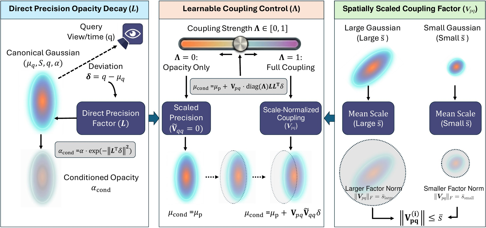
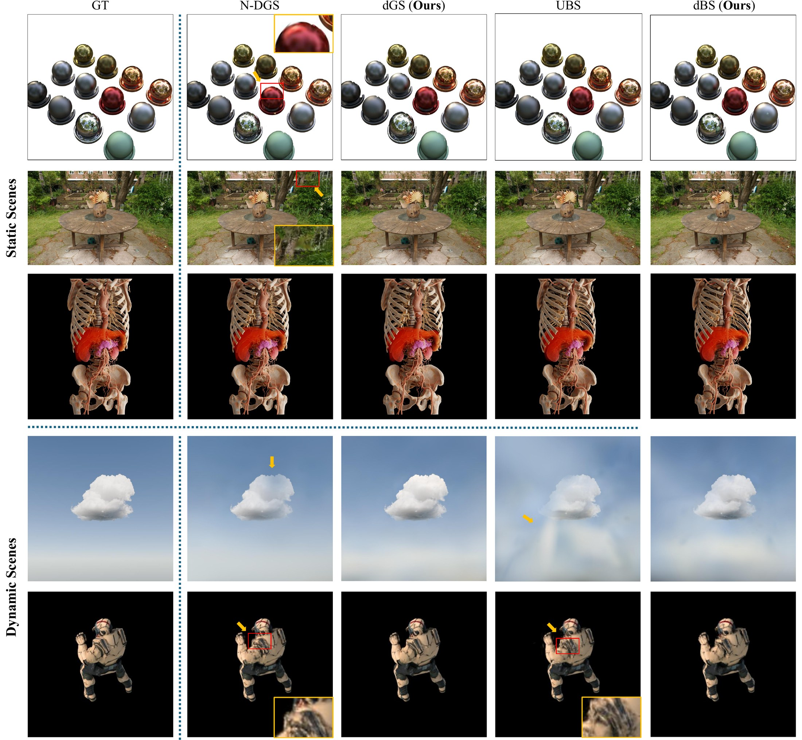

N-dimensional splatting extends 3D Gaussian Splatting with conditioning variables such as view direction and time to model view-dependent and dynamic effects. Each primitive is lifted into a joint distribution over 3D position and conditioning variables, and at render time is conditionally sliced at the query to recover a 3D primitive whose mean, opacity, and covariance vary continuously with view or time.
N-DGS (covering 6DGS and 7DGS) and UBS together represent the leading N-dimensional splatting formulations across Gaussian and Beta kernels, but share the same conditional-slicing step: all three effects are derived from the joint covariance matrix per primitive in every forward pass, requiring matrix inversions and regression-matrix multiplications that scale with primitive count. The conditional-slicing step is kernel-agnostic, so a single improvement carries across families.
We introduce direct conditional parameterization, replacing the covariance-derived form with explicit per-effect parameters: a Cholesky precision factor for opacity and a displacement matrix with learnable per-dimension coupling for position. Applied to both kernels, the parameterization yields dGS (Gaussian) and dBS (Beta). Across five static and dynamic benchmarks, dGS and dBS match or exceed their covariance-derived counterparts on quality (up to +1.26 dB in the main MCMC evaluation) while running 6.9–7.7× faster at the slicing step and up to 2.66× faster end-to-end rendering. Direct conditioning is a kernel-agnostic drop-in replacement for covariance-derived conditioning in N-dimensional splatting.
Rendering only needs three things from a joint primitive: the query precision, the query-to-position regression, and the conditional spatial covariance. We parameterize them directly instead of deriving them from an ambient joint covariance through inversion and Schur complements.

A lower-triangular Cholesky factor makes Vqq = LL⊤ the precision itself. Opacity is one triangular product and a squared norm, with no inversion.
Λ ∈ [0,1]C decides how much each query dimension moves the mean. 0 decouples position from opacity; 1 recovers full N-DGS-style coupling.
Vpq = s̄Θpq ties the shift to the primitive's mean scale. Removing this prior costs 2.65–2.97 dB.
Direct conditioning, given the query deviation δ = q − μq:
αcond = α · exp( −λo · ‖ L⊤δ ‖² )
μcond = μp + Vpq · diag(Λ) · Vqq · δ
The conditional covariance stays query-independent, as in 3DGS, so existing densification strategies carry
over unchanged. For the Beta kernel (dBS), the opacity decay becomes
∏i (1 − tanh(zi²))βi with
z = L⊤δ, and the same bandwidth β supplies the coupling
Λβ = min(β/4, 1). We also prove the unrestricted tuple is a smooth, globally
bijective coordinate chart for joint Gaussian covariances.
| Per-primitive operation | N-DGS | UBS | dGS | dBS |
|---|---|---|---|---|
| Invert Σqq | ✓ | ✓ | — | — |
| Regression matrix ΣpqΣqq−1 | ✓ | ✓ | — | — |
| Covariance correction | ✓ | ✓ | — | — |
| Slicing time, C=3 (view) | 0.71 ms | 0.67 ms | 0.10 ms (7.1×) | 0.10 ms (6.9×) |
| Slicing time, C=4 (view + time) | 0.96 ms | 1.34 ms | 0.12 ms (7.7×) | 0.13 ms (7.2×) |
Slicing-only CUDA forward pass, 1M Gaussians, NVIDIA A100. Speedups are over the covariance-derived counterpart.
MCMC densification with matched Gaussian budgets. Each direct method is paired with its covariance-derived counterpart, so any difference reflects the conditioning parameterization alone.
| Dataset | Method | #Gauss (K) | Time (m)↓ | FPS↑ | FPSCUDA↑ | PSNR↑ | SSIM↑ | LPIPS↓ |
|---|---|---|---|---|---|---|---|---|
| NeRF Syntheticstatic | N-DGS | 300 | 10.43 | 183.58 | 348.95 | 34.04 | 0.973 | 0.027 |
| dGS | 300 | 10.26 | 245.18 | 593.94 | 34.34 | 0.973 | 0.026 | |
| UBS | 300 | 6.80 | 155.96 | 306.33 | 34.48 | 0.975 | 0.026 | |
| dBS | 300 | 5.48 | 239.09 | 415.66 | 34.53 | 0.975 | 0.025 | |
| Mip-NeRF 360static | N-DGS | 2,852 | 51.23 | 35.69 | 75.31 | 26.88 | 0.775 | 0.263 |
| dGS | 2,574 | 49.85 | 42.49 | 200.56 | 27.67 | 0.794 | 0.227 | |
| UBS | 3,057 | 28.59 | 40.94 | 76.18 | 28.50 | 0.841 | 0.183 | |
| dBS | 3,057 | 24.42 | 62.05 | 157.45 | 28.70 | 0.842 | 0.185 | |
| 6DGS-PBRstatic | N-DGS | 163 | 54.80 | 328.75 | 476.79 | 40.06 | 0.976 | 0.039 |
| dGS | 163 | 47.54 | 356.15 | 551.02 | 40.34 | 0.976 | 0.038 | |
| UBS | 163 | 8.70 | 239.87 | 348.63 | 39.53 | 0.975 | 0.042 | |
| dBS | 163 | 8.47 | 305.33 | 401.93 | 39.72 | 0.976 | 0.042 | |
| D-NeRFdynamic | N-DGS | 150 | 10.31 | 306.51 | 501.52 | 34.63 | 0.976 | 0.033 |
| dGS | 150 | 10.61 | 407.40 | 746.65 | 34.64 | 0.976 | 0.030 | |
| UBS | 150 | 8.37 | 229.83 | 371.81 | 32.91 | 0.967 | 0.040 | |
| dBS | 150 | 9.34 | 323.75 | 463.09 | 33.55 | 0.972 | 0.033 | |
| 7DGS-PBRdynamic | N-DGS | 175 | 28.44 | 294.48 | 511.12 | 29.20 | 0.944 | 0.063 |
| dGS | 175 | 31.12 | 366.06 | 577.38 | 29.90 | 0.948 | 0.061 | |
| UBS | 175 | 9.90 | 232.17 | 396.33 | 30.61 | 0.951 | 0.057 | |
| dBS | 175 | 8.79 | 347.93 | 539.57 | 31.87 | 0.955 | 0.053 |
Means over all scenes. FPS uses a PyTorch reference slicer; FPSCUDA uses the fused CUDA slicing kernel. Bold = better of each pair. All methods: NVIDIA A100, 30K iterations, TC-GS rasterizer, identical learning rates and densification schedules per dataset.
dBS achieves the best PSNR on Mip-NeRF 360 (28.70 dB) and ties for best PSNR on NeRF Synthetic (34.53 dB). UBS and dBS are re-evaluated under the 3DGS protocol, so UBS numbers differ from the original paper.
| Method | Mip-NeRF 360 | NeRF Synthetic | |||||
|---|---|---|---|---|---|---|---|
| PSNR↑ | SSIM↑ | LPIPS↓ | PSNR↑ | SSIM↑ | LPIPS↓ | ||
| Implicit | Instant-NGP | 25.51 | 0.684 | 0.398 | 33.18 | 0.959 | 0.055 |
| Mip-NeRF 360 | 27.69 | 0.792 | 0.237 | 33.25 | 0.962 | 0.039 | |
| Zip-NeRF | 28.54 | 0.828 | 0.189 | 33.10 | 0.971 | 0.031 | |
| Explicit | 3DGS | 27.20 | 0.815 | 0.214 | 33.31 | 0.969 | 0.037 |
| GES | 26.91 | 0.794 | 0.250 | – | – | – | |
| 2DGS | 27.04 | 0.805 | 0.297 | 33.07 | – | – | |
| Mip-Splatting | 27.79 | 0.827 | 0.203 | 33.33 | 0.969 | 0.039 | |
| 3DGS-MCMC | 28.29 | 0.840 | 0.210 | 33.80 | 0.970 | 0.040 | |
| DRKS | 26.76 | 0.787 | 0.236 | 33.82 | – | – | |
| Textured GS | 27.35 | 0.827 | 0.186 | 33.24 | 0.967 | 0.043 | |
| Quadratic GS | 27.39 | 0.813 | 0.213 | – | – | – | |
| Disc-GS | 28.01 | 0.833 | 0.189 | – | – | – | |
| Triangle Splatting | 27.00 | 0.808 | 0.231 | – | – | – | |
| Radiance Meshes | 27.15 | 0.810 | 0.274 | – | – | – | |
| Spherical Voronoi | 28.57 | 0.835 | 0.230 | 34.53 | 0.973 | 0.032 | |
| UBS | 28.50 | 0.841 | 0.183 | 34.48 | 0.975 | 0.026 | |
| dBS (Ours) | 28.70 | 0.842 | 0.185 | 34.53 | 0.975 | 0.025 | |
Bold = best, underline = second best.
Learned Λ beats both fixed extremes. Diffuse scenes prefer weak coupling and specular scenes prefer strong coupling, so the right amount is scene- and primitive-dependent.
| Config | NeRF Synthetic | 6DGS-PBR | ||||
|---|---|---|---|---|---|---|
| PSNR↑ | SSIM↑ | LPIPS↓ | PSNR↑ | SSIM↑ | LPIPS↓ | |
| Λ = 0 (dGS-O, opacity only) | 33.84 | 0.971 | 0.030 | 36.54 | 0.965 | 0.059 |
| Λ = 1 (fixed full coupling) | 33.78 | 0.971 | 0.029 | 37.31 | 0.972 | 0.053 |
| dGS w/o spatial scaling s̄ | 31.26 | 0.957 | 0.046 | 34.78 | 0.951 | 0.075 |
| Learned Λ (dGS) | 33.91 | 0.972 | 0.029 | 37.75 | 0.972 | 0.052 |
Standard 3DGS densification. An unscaled coupling factor is worse than no position regression at all.

Static and dynamic scenes. dGS shows noticeably fewer artifacts than N-DGS on static scenes. On dynamic scenes, dGS and dBS both look better than their covariance-derived counterparts.
@inproceedings{gao2026direct,
title = {Direct Conditional Parameterization for N-Dimensional Splatting},
author = {Gao, Zhongpai and Planche, Benjamin and Nguyen, Van Nguyen and Zheng, Meng and
Choudhuri, Anwesa and Innanje, Arun and Chen, Terrence and Wu, Ziyan},
booktitle = {Advances in Neural Information Processing Systems (NeurIPS)},
year = {2026}
}